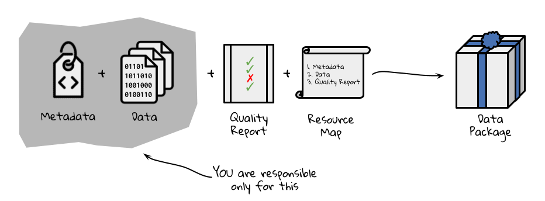

Planning a Smooth Finish & Quarto 101
Overview
Under Construction
Learning Objectives
TBD
Preparation
TBD
Make Data and Code Findable
Depositing your assembled dataset in a public repository ensures that others can find it and (importantly) cite it effectively. Using a repository with high-quality, machine-readable metadata goes a long way toward ensuring that it is usable and appropriately credited. Unless there is a specific reason not to use the Environmental Data Initiative (EDI) repository, it is what we recommend for LTER-related data because EDI serves some of the most “findable, accessible, interoperable, and reusable” (FAIR) environmental data available. Also, since EDI serves the vast majority of LTER data, co-locating your synthesis data makes it more available to users seeking similar types of data.

The Environmental Data Initiative has developed the ezEML app to simplify the publication of datasets with high-quality metadata. The form-based tool leads users through creating and validating Ecological Metadata Language (EML) documents, a standard that can describe many types of data and their use cases, and then submitting them to the repository with accompanying data files. To prepare for submitting your data you’ll need to gather some information and make a few decisions.
General dataset descriptors: You’ll need a title, abstract, keywords and list of dataset creators (with associated ORCIDs). While it’s tempting to just use the abstract for your paper here, an abstract for a dataset does NOT focus on scientific findings. Instead, focus on the purpose of the data, how they were assembled and what decisions were made in the process. In writing your metadata, try to adopt the perspective of a data user and ensure that the information you provide answers questions they might have about data quality and fitness for use.
Data table descriptors: The most common submission formats in EDI are simple comma-separated value (CSV) tables. What tables does your synthesized dataset contain, and how do they relate to each other?
Column descriptors: List the column names, units, and descriptions for each column in each table.
Methods: Be ready to describe, in reproducible detail, the steps used to create the published dataset. For a synthesis project, your team probably spent considerable time finding, cleaning, harmonizing, and assembling the finished product into something that could be analyzed. What were these steps?
Provenance: What original data sources did you draw on? You’ll want your dataset to link to the original data sources so that they, too, receive credit for their work. In ezEML, data provenance information is associated with the methods metadata, and links are displayed on all EDI dataset landing pages.
Reuse: ezEML will ask you to decide on a license for reuse of your synthesized data. EDI and LTER recommend using a CC-0 public domain dedication which allows reuse and adaptation without requiring a specific form of citation. Professional standards and EDI policy encourage citation, but preserving flexibility about the form of citation relieves downstream users from the obligation to cite data in ways that may not be workable for large syntheses. CC-BY is also an acceptable license. It allows downstream users to re-share and adapt the licensed work, but requires that users “give appropriate credit, provide a link to the license, and indicate if changes were made.”
Sharing code: Chances are, your code is already public on GitHub (and hopefully, well documented), but you’ll want to create a persistent reference to the version of the code that you used to conduct this analysis. One way to go is to package your code along with your data on EDI. That approach makes the code findable, because it is right there with the data, but the code remains static, and it can be difficult to represent the software package structure and release history. Many researchers now prefer to release their GitHub repository code on Zenodo and reference the specific release with their dataset in EDI or another repository. This allows continued development of code in the repository, while linking together the dataset and the code for creating or analyzing it. This approach is great for synthesis groups that will continue adding new data, analyses, or publications in the future.
Promote Your Dataset (and Other Products)
Now that potential users and collaborators can find your dataset, how will they? Data in EDI are easily found through EDI, DataONE and Google data search, but many potential users won’t even know what they should be searching for. “Build it and they will come” doesn’t work much better for data than it does in other realms – at least not yet. Eventually, AI-driven search tools for researchers may improve the situation, but for now it’s still important to garner the attention of individuals. Who do you want to reach? Who you want to reach and what you want them to do with the data, paper, or other tool will influence how you spend the (likely quite limited) time you have to spend on promotion.
Want to reach community ecologists? Modelers? Land managers? Teachers? The choice will affect both where and how you promote the work. The choices here are endless, but the examples below illustrate the principle.
Data papers are essentially an extended version of your metadata, published in the form of a paper, and referencing the published dataset. They are great for calling attention to a high-value dataset, especially when it crosses disciplinary boundaries. Data papers are most appropriate when you want to reach people, such as modelers, who will use the dataset directly rather than your analysis and interpretation. Ecology, Earth System Science Data, Biodiversity Data Journal, and Scientific Data all focus on data papers and are relevant for environmental science.
Scientific conferences. Talks and posters at scientific conferences such as the Ecological Society of America or the American Geophysical Union are the go-to option for promoting your work to researchers in your field. But if you want people to use your dataset, not just admire your brilliance, you might consider running a symposium that allows more time for discussion or a workshop to get colleagues working with the data in a hands-on way. Note that the deadlines for proposing workshops and symposium sessions are often much earlier than for individual talks and posters.
Webinars. Many scientific networks and societies offer webinar series and are happy to host and promote webinars about new developments in the field. For a pretty modest investment on your part, you can reach a very targeted audience of researchers or educators with interest in your work.
Social media. BlueSky is picking up many refugees from the once-thriving science community on X. Instagram, YouTube, Reddit and TikTok also carry a good deal of science content. If you already have experience with the platform and a community of followers, social media can rapidly expand exposure for datasets and papers. You can also fine-tune your strategy by tagging accounts with large audiences of people similar to those you want to reach.
Newsletters and trade publications. If your work is truly relevant to a particular group of professionals such as land managers, urban planners, fishers, or foresters, consider developing a polished one-page summary or an infographic and reaching out to relevant trade journals and newsletters.
Whatever tactics you pursue, spend a little time as a group agreeing on the language and the main talking points about your work. The potential impact is much greater when everyone amplifies a coherent set of messages. One time-honored tool for developing these messages is the “Message Box” developed by COMPASS. Assembling those key messages in one location, such as on a project website, also gives each team member a place to point interested individuals and a touchstone for reference.
Notebook Structure & Value
Files that combine plain text with embedded code chunks are an excellent way of reproducibly documenting workflows and faciliating conversations about said workflows (or their outputs). Examples of notebook files include Quarto documents, Jupyter Notebooks, and R Markdown files. Regardless of the specific type, all of them function in the same way. Each of them allows you to use code chunks in the same way that you might use a typical script but between the code chunks you can add–and format–plain, human-readable text. Arguably you could do this with comments in a script but this format is built around the idea that this plain text is intended to be interpretable without any prior coding experience. The plain text can be formatted with Markdown syntax (we’ll discuss that in greater depth later) but even unformatted text outside of code chunks is visually ‘easier on the eyes’ than comment lines in scripts.
Another shared facet of notebook interfaces is that they are meant to be “rendered” (a.k.a. “knit”) to produce a different file type that translates code chunks and Markdown-formatted text into something that looks much more similar to what you might produce in Microsoft Word or a Google Doc. Typically such files are rendered into PDFs or HTMLs though there are other output options. These rendered files can then be shared (and opened) outside of coding platforms and thus make their content even more accessible to non-coders.
In synthesis work these reports can be especially valuable because your team may include those with a wealth of discipline insight but not necessarily coding literacy. Creating reports with embedded code can enable these collaborators to engage more fully than they might otherwise be able to if there was essentially a minimum threshold of coding literacy required in order to contribute. These reports can also be useful documentation of past coding decisions and serve as reminders for judgement calls for which no one in the team remembers the rationale.
Introduction to Quarto
LTER Workshop Materials
The workshop materials we will be working through live here but for convenience we have also embedded the workshop directly into the SSECR course website (see below).